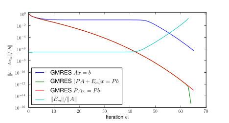

Sequences of linear algebraic systems
\[
A^{(k)} x^{(k)} = b^{(k)}
\]
with \(A^{(k)}\in\vsL(\C^N)\)
and \(x^{(k)},b^{(k)}\in\C^N\)
for \(k=1,2,\ldots\)
appear in a wide range of applications, for example
optimization loops,
parameter-dependent problems,
time stepping schemes for time-dependent PDEs,
Newton's method
\(A^{(k)}\) and \(A^{(k+1)}\) often have similar spectral
properties or are in fact equal.
Background: Krylov subspace methods
For large \(N\) and sparse matrices:
Krylov subspace methods with preconditioner
\(M^{(k)}\in\vsL(\C^N)\),
e.g. GMRES, MINRES or CG applied to
\[ M^{(k)}A^{(k)}x^{(k)}=M^{(k)}b^{(k)}. \]
Problem-specific preconditioners may limit the number of
iterations and the computation time, e.g. by using
(algebraic) multigrid for a part of the operator.
However, exploitation of similar spectral properties in a
sequence of linear systems difficult with conventional
preconditioners.
Background: convergence
Let us consider the MINRES method for a single preconditioned linear algebraic system
\[ MAx=Mb, \]
with \(MA=UDU^*\), \(U\) unitary and \(D=\diag(\lambda_1,\ldots,\lambda_N)\).
In some applications, the preconditioned operator \(MA\)
exhibits a small number of separated eigenvalues whose existance
slows down the convergence.
Discussion of this situation for MINRES in [SimS13].
Deflation
Let \(Z\in\C^{N,p}\) s.t. \(\ip{Z}{AZ}\) is invertible. Define
projection \(P_Z\in\vsL\) by
\[ P_Z x=x - AZ\ip{Z}{AZ}^{-1}\ip{Z}{x}. \]
MINRES can be applied to the deflated system
\[ M P_Z A y = M P_Z b \]
with inner product \(\ipdots{}_{M^{-1}}\). The resulting
iterates \(y_n\) have to be corrected:
\( x_n:=P_Z^*y_n + Z\ip{Z}{AZ}^{-1}\ip{Z}{b} \).
If \(\Im(Z)\) is the \(MA\)-invariant subspace associated with
\(\lambda_1,\ldots,\lambda_p\):
\[
\nrm{Mb - MAx_n}_{M^{-1}}
\leq
\nrm{r_0}_{M^{-1}}
\min_{p\in\Pi_0^n}
\max_{i\in\{p+1,\ldots,N\}}|p(\lambda_i)|
\]
Deflation in practice
Where do the vectors come from?
Exact eigenvectors usually not available.
For sequences of linear systems: eigenvector approximations
(Ritz vectors) from the Krylov subspace built for the \(k\)-th
system can be used for the next linear system as deflation
vectors, see [WanSP07].
Strategy was applied to restarted methods before
[ErhBP96, ChaS97, ...].
Eigenvector approximations may also be available from the
theory of the specific problem [GauS13].
Application: nonlinear Schrödinger problems
For an open domain \(\Omega\subseteq\R^2\) or
\(\Omega\subseteq\R^3\) a function \(\psi\in X\subseteq
H_{\C}^2(\Omega)\) is called a solution of the nonlinear
Schrödinger equation if
\[ S(\psi) := (K + V +g |\psi|^2)\psi = 0 \qquad\text{in}~\Omega\]
where
\(K:X\lra X\) is linear, self-adjoint and
positive-semidefinite w.r.t. the \(L^2(\Omega)\) inner
product,
\(V\in X\) is a scalar potential and
\(g\in\R\) is a coupling parameter.
Of course, one is interested in non-zero solutions \(\psi\neq 0\).
Application: nonlinear Schrödinger problems
Newton's method
For "good-enough" initial guess \(\psi_0\), iterate for
\(k=0,1,2,\ldots\):
solve \( J(\psi_k)\delta_{k+1} = -S(\psi_k) \) with Jacobian
\( J(\psi): X\lra X\)
defined by
\[ J(\psi)\phi = (K + V + 2g|\psi|^2)\phi + g \psi^2
\overline{\phi} \]
update \(\psi_{k+1} = \psi_k + \delta_{k+1} \)
⚠ Important ⚠ The Jacobian is
linear if \(X\) is defined as a vector space over
\(\R\).
self-adjoint but in general indefinite w.r.t. the inner product \(\ipdots{}_{\R}\)
defined by
\[ \ip{x}{y}_{\R} := \Re\ip{x}{y}_{L^2(\Omega)}. \]
Application: nonlinear Schrödinger problems
For a nontrivial solution \(\psi\)
\[ J(\psi)(\i\psi) = \i S(\psi) = 0 \]
and thus the Jacobian \(J(\psi)\)
is singular.
While \(\psi_k\) approaches a solution \(\psi\) the Jacobians
\(J(\psi_k)\) becomes more and more ill-conditioned.
\(\i\psi_k\) can serve as approximation to the eigenvector
corresponding to the eigenvalue moving to zero.
\(\lra\) Use \(\i\psi_k\) as deflation vector for the solution of
\[ J(\psi_k)\delta_{k+1} = -S(\psi_k). \]
Question: can we construct an Arnoldi relation
for \(K_n(P_ZA,P_Zv)\) from \eqref{arnoldi}?
Answer: in general: no. ☹
But...
First steps with a new approach...
Arnoldi relations for \(\vsK_n(P_ZA+E_m,P_Zv)\), i.e. perturbed
Arnoldi relations, can be constructed for all
\(m=1,\ldots,n-p\):
\[ (P_ZA + E_m) W_m = W_{m+1} \underline{G}_m, \]
where \( W_m = [w_1,\ldots,w_m]\), \(w_1 = \frac{P_Zv}{\nrm{P_Zv}}\)
and:
no application of \(A\) or \(P_Z\) has to be performed!
\(W_m\) does not have to be explicitly computed.
\(\nrm{E_m}\) is available as a byproduct and
\[\nrm{E_1}\leq\nrm{E_2}\leq\ldots\leq\nrm{E_{n-p}}.\]
\(E_m\) is optimal w.r.t. the Krylov subspace \(\vsK_n(A,v)\).
Residual norms of Krylov subspace method applied to
\( (P_ZA+E_m)x = P_Zb \)
can be computed from \(G_m\) for \(n-p\) steps.
First steps with a new approach...
Numerical toy example computed with
KryPy:
\(N=100\), \(A=\diag(10^{-5},1,2,\ldots,N-1)\),
\(b=[1,\ldots,1]/\sqrt{N}\).

Conclusion
Deflation is helpful in practice if
more than one linear algebraic system has to be solved.
eigenvector approximations can be obtained analytically
(e.g. for nonlinear Schrödinger problems).
Automatic selection of deflation vectors still missing
Perturbation approach:
Sets of deflation vectors can be "tested".
Looks promising.
Is still under investigation.
Perturbation theory / forward error analysis for
Krylov subspaces is delicate. (I would like to give a
separate talk on this alone ☺).
Chapman and Saad,
Deflated and augmented Krylov subspace techniques.
1997. Numer. Linear Algebra Appl.
Erhel, Burrage and Pohl,
Restarted GMRES preconditioned by deflation.
1996. J. Comput. Appl. Math.
G., Gutknecht, Liesen and Nabben,
A framework for deflated and augmented Krylov subspace methods.
2013. SIMAX.
http://arxiv.org/abs/1206.1506
G. and Schlömer,
Preconditioned recycling Krylov subspace methods for self-adjoint problems.
2013 (under revision).
http://arxiv.org/abs/1208.0264
Sifuentes, Embree and Morgan,
GMRES convergence for perturbed coefficient matrices,
with Application to Approximate Deflation Preconditioning.
2013. SIMAX.
Simoncini and Szyld,
On the Superlinear Convergence of MINRES.
2013. In Num. Math. and Adv. Appl. 2011.
Wang, de Sturler and Paulino,
Large-scale topology optimization using preconditioned Krylov subspace methods with recycling.
2007. Internat. J. Numer. Methods Engrg.


{kind=link}